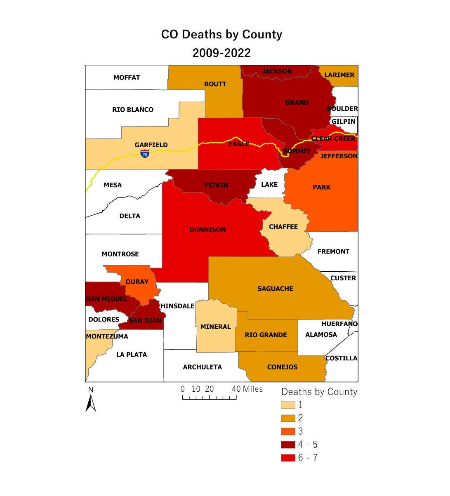

Avalanche Accident Analysis
This analysis was completed completely in ARCgisPRO using data from the Colorado Avalanche Information Center. It searches for and identfies trends to better understand backcountry users' risk

Vist the entire ESRI story here!